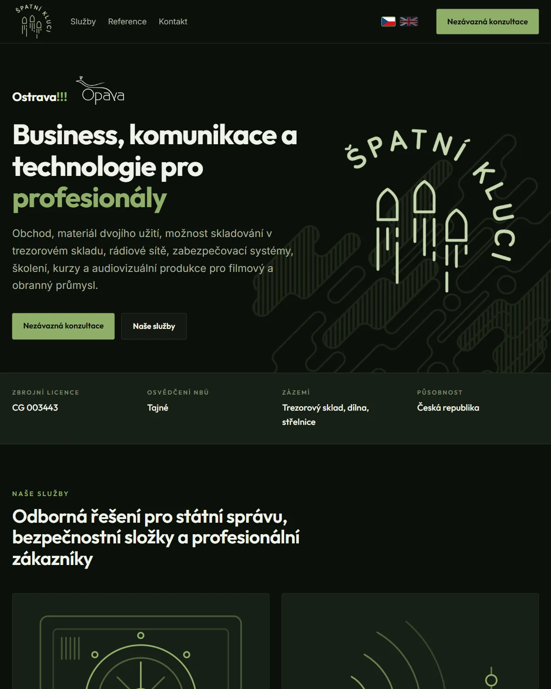
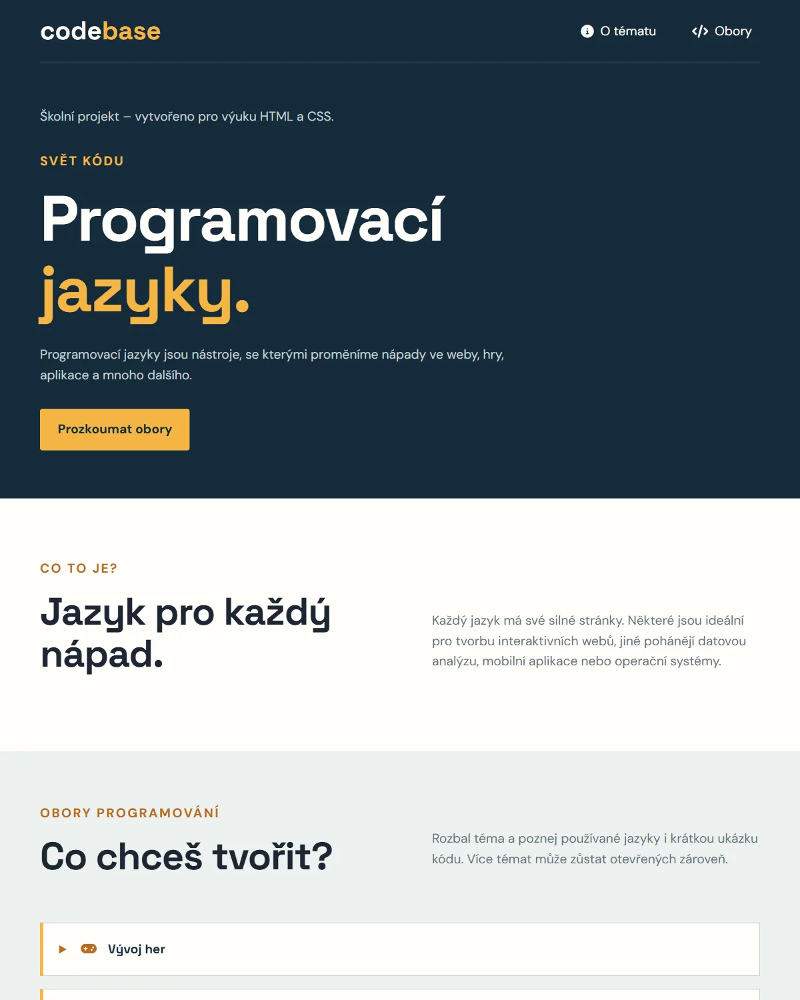
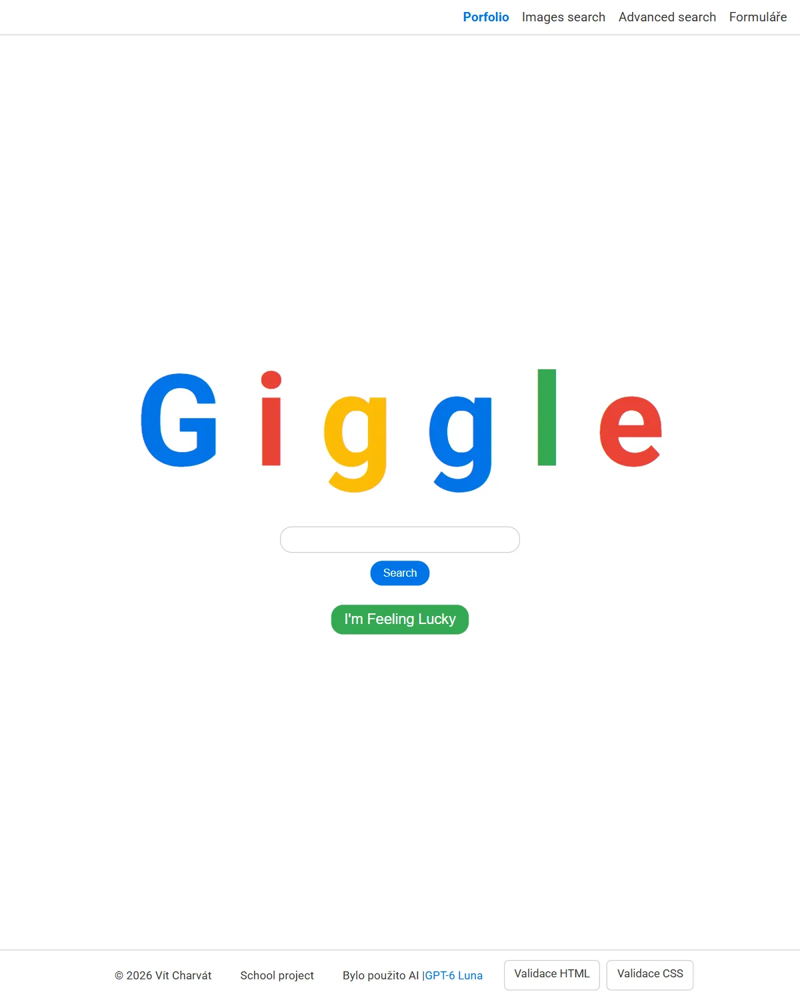

Projects
-

Špatní Kluci
Company website, live · Summer 2026
A paid job for an Ostrava company that supplies communication technology to professionals. I did the design, the code and the deployment on my own.
-
Bakaláři Timetable
iPhone widget · October 2026
Your school timetable on the iPhone home screen: the current lesson with a live countdown, the classroom, substitutions in orange, and it works offline.
-

Programming Languages
School website · September 2026
Which languages are used for games, AI, websites and mobile apps, with a short code sample for each field.
-
import time def countdown(): try: countTime = int(input("second to countdown:")) while countTime != 0: print(countTime) time.sleep(1) countTime -= 1 except ValueError: print("please enter a whole number") def main(): countdown() print("Countdown ended") # countdown.pyPython Projects
Small programs · 2026
Eleven programs that run outside the browser: a password checker, a screen recorder, a weather notifier and a Pokémon lookup.
-

More projects
School work · 2026
Giggle, my own search engine modeled on Google, and the other websites from programming classes.
About me
- Studies
- Information technology
- School
- OA a SOŠL Opava, third year
- Also does
- Drawing and video editing
I used to draw, and it still shows in my code. Drawing taught me to look at the whole picture, and that is how I build websites today: what you see first, where your eyes go next and where you should click.
Tools
- HTML Every website here
- CSS Layouts and animations
- Python 11 small programs
- JavaScript Bakaláři widget
- Git Every project
- GitHub Code and hosting
Timeline
- Python Projects Jan 2026
- Špatní Kluci Summer 2026
- Programming Languages Sep 2026
- This portfolio Oct 2026
- Giggle Oct 2026
- Bakaláři Timetable Oct 2026
Write to me
- vitcharvat08
@gmail.com - github.com/
VitekCharvat - Opava, Czech Republic